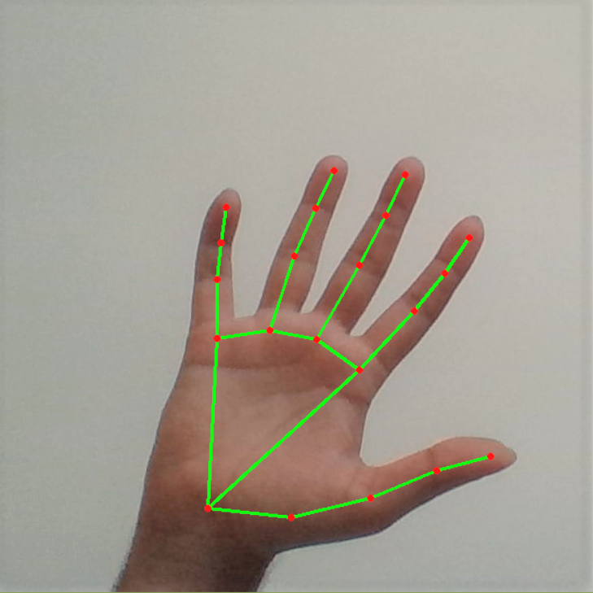

Building a battle game in one HTML file
September 28, 2026 by Emmore Baltimore

Lately my favourite way to practise coding is to build games that run in a single HTML file. My latest one is a turn-based battle game where you pick moves from a menu, a bit like the old Pokémon games. Because everything lives in one
file, I can open it in a browser, test a change and fix a bug in a few seconds.
The hardest part was not the graphics but the rules. I had to decide how each turn works, how damage is worked out, and what happens when a fighter runs out of health. Writing those rules as small, separate functions kept my code from
turning into a tangle. I am also learning that a game feels much better once I add a little randomness, so no two battles play out the same way.
Controlling sound with my hands
October 2, 2026 by Emmore Baltimore

Another project I enjoy is a gesture-controlled vocoder, which is a tool that changes the sound of a voice. Instead of turning knobs with a mouse, I wanted to shape the sound by moving my fingers in front of the camera. It started as a
quick prototype in the browser, and seeing the sound change as my hand moved felt like magic.
This project taught me to break a big idea into tiny steps. First I had to get the camera to see my hand, then turn the finger positions into numbers, and only then connect those numbers to the sound. I tested each step on its own, so
when something broke it was much easier to find the cause. I now plan every project this way, whether it is a game or a web page.